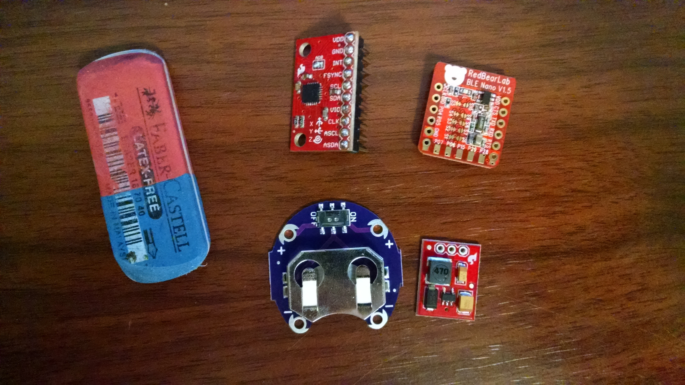
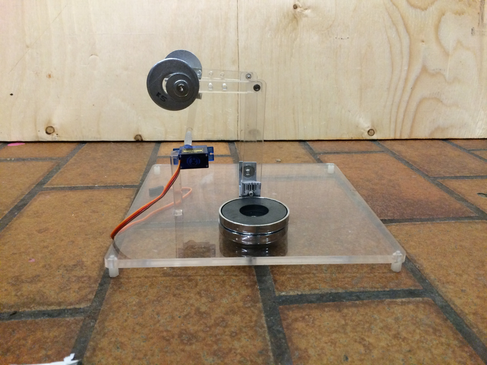
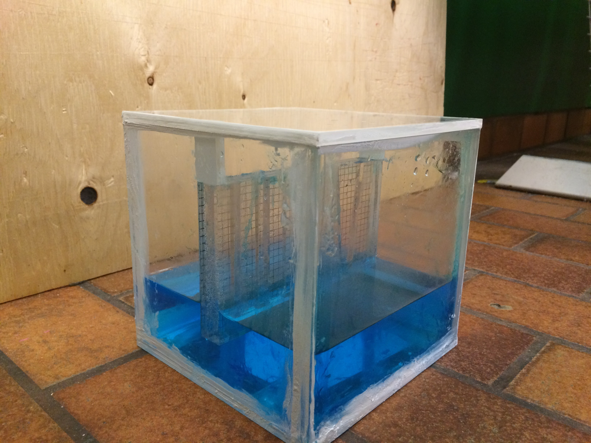

3 Microgravity Experiments
Project Summary The team designed and constructed three microgravity experiments that would be conducted by Astronauts4Hire and the Canadian Space Agency during a parabolic flight and suborbital flight. Experiment 1: Solid Body Rotation The first experiment explores rigid body rotation in microgravity and takes gyroscope measurements to demonstrate the intermediate axis theorem. It requires extensive programming, testing, wiring, circuitry, testing and debugging of the BLE Nano microprocessor to find the centre of gravity for rotation for intermediate and stable axis and also requires the implementation of the acceleration logger to capture gyroscope data. The microcontroller was connected with the Bluetooth chip using the mobile app, thus the information was moved to the microcontroller via Bluetooth. The microcontroller read values from I2C and passed them to an iPhone over Bluetooth. As a result, the data of the angular velocity of our solid body rotation experiment was captured and simulated as a graph on the computer via a python script.
Clockwise from the top left they are: Gyro which measures rotation and also acceleration, microcontroller and bluetooth chip, 3.3V regulator, and battery holder.
Experiment 2: Magnetic Pendulum The second demonstrates the motion of pendulums while the pendulum is being dropped. One pendulum is by itself and the other has an attractive magnet on the end. After the experiment was designed and built, the experiment was integrated and the Arduino circuit was tested and debugged.
The pendulum in action!
Experiment 3: Capillary Action The third experiment used various tubes to show capillary action to explain the phenomenon of fluid sloshing in the gas engines of spacecraft. After the experiment was designed and built data was measured through grid paper (5 mm) and refraction considerations. To meet safety requirements the triple containment guideline was implemented to ensure no liquid leaks.
Capturing Capillary Action!
More Projects to be released soon!
- Way2Go's new website
- Way2Go's new app
- xperience II game